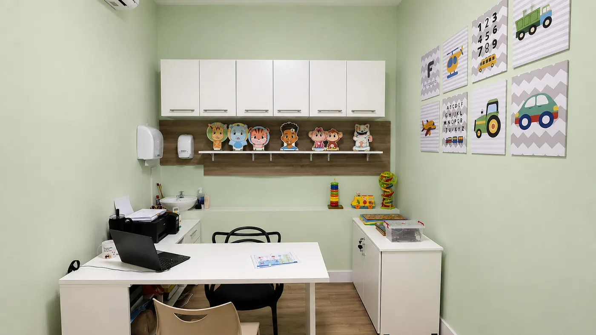

- Início
- Especialidades
- Fonoaudiologia infantil
Fonoaudiologia infantil
Fonoaudiologia infantil em Ipatinga
Para ajudar a desenvolver a comunicação do seu filho: fala, linguagem e, quando a fala ainda não vem, outros jeitos de se expressar.

Quando procurar
Sinais que pedem um olhar da fono
Cada criança tem o seu ritmo, mas alguns sinais merecem atenção, principalmente quando persistem ou aparecem juntos.
- Fala pouco para a idade ou começou a falar tarde
- Fala difícil de entender, com trocas ou omissões de sons
- Fala a mesma palavra de jeitos diferentes a cada tentativa
- Dificuldade com palavras maiores, ou ritmo e entonação diferentes do esperado
- Ainda não fala e precisa de outro jeito de se comunicar
- Bebê que balbucia pouco ou ainda não imita sons
Esses sinais, isolados, não fecham um diagnóstico. Eles indicam a importância de uma avaliação fonoaudiológica cuidadosa.
Comunicação Aumentativa e Alternativa
Quando a fala ainda não vem, a comunicação vem por outro caminho
A CAA usa recursos como pranchas, figuras e aplicativos para a criança se expressar enquanto a fala se desenvolve. Ela não substitui a fala: dá à criança um jeito de participar, pedir, contar e ser compreendida.
Na terapia
A fono escolhe e adapta os recursos de comunicação para cada criança.
Em casa
A família aprende a usar a CAA na rotina, nas situações de todo dia.
Em grupo
Treinamento prático para pais e familiares, com dinâmicas e exemplos reais.
A CAA não é apenas uma ferramenta. É uma forma de garantir que cada criança tenha oportunidades para se expressar, participar e ser compreendida.
Como é o atendimento
Da avaliação ao dia a dia em casa
Avaliação
Conversa com a família e observação da criança, com brincadeiras e atividades.
Plano de terapia
Objetivos claros para cada fase, explicados para a família.
Sessões e orientação
A terapia na sala, e orientações para levar o que é trabalhado para a rotina.
Quem atende
Quem atende
Jussara Werner
Fonoaudióloga infantil · CRFa 6-4518
“Acredito que cada pequeno progresso é uma grande vitória.”
Abordagem individualizada e baseada em evidências para apoiar o desenvolvimento comunicativo e cognitivo de cada criança.
- Especialista em Linguagem pelo CFFa
- Terapeuta PROMPT nível 1
- Transtornos motores de fala
- CAA
Dúvidas
Perguntas frequentes
Meu filho fala pouco. Devo esperar?
Na dúvida, vale avaliar. A avaliação não obriga a começar uma terapia, e ajuda a família a saber se é hora de esperar ou de intervir.
Usar CAA atrapalha a criança a falar?
Não. A CAA dá à criança um jeito de se comunicar enquanto a fala se desenvolve, e a fono acompanha os dois caminhos juntos.
Como funciona o treinamento de CAA para pais?
É um encontro prático, com dinâmicas, materiais e exemplos reais, para a família entender o que é a CAA e usar no dia a dia. Pergunte pela próxima turma no WhatsApp.
Atende pelo convênio?
Sim, pelos convênios da clínica, conforme as regras de cada operadora. Também há atendimento particular. A recepção confirma a cobertura ao agendar.
Na mesma clínica
Outras especialidades
Comunicação é conexão.
Conte para a recepção a idade da criança e o que tem chamado sua atenção. A equipe confirma horário e convênio.